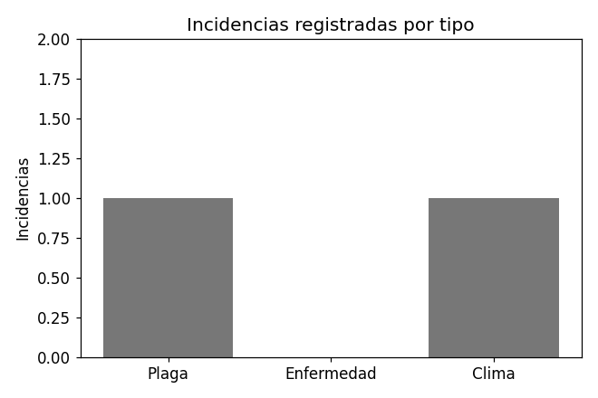

Tipos de incidencia registrados
Requisito RF-35: consultar los tipos de incidencia registrados.
| ID | Nombre | Descripción |
|---|---|---|
| 1 | Plaga | Presencia de insectos o plagas en el cultivo. |
| 2 | Enfermedad | Síntomas de enfermedad fúngica o bacteriana. |
| 3 | Clima | Daño por condiciones climáticas adversas. |
Registrar tipo de incidencia — Requisito RF-34
Actualizar tipo de incidencia — Requisito RF-36
Eliminar tipo de incidencia — Requisito RF-37
Incidencias registradas
Requisito RF-39: consultar las incidencias registradas.
| ID | Tipo | Cultivo | Fecha | Severidad | Estado |
|---|---|---|---|---|---|
| 1 | Plaga | Jitomate | 02/03/2026 | Media | Activa |
| 2 | Clima | Lechuga | 10/03/2026 | Alta | Atendida |
Registrar incidencia — Requisito RF-38
Actualizar incidencia — Requisito RF-40
Eliminar incidencia — Requisito RF-41
Adjuntar evidencia — Requisito RF-42
Reporte de incidencias en PDF — Requisito RF-43
En este prototipo el documento es un archivo estático de ejemplo: reporte-incidencias.pdf.
Porcentaje de cultivos con incidencias — Requisito RF-44
| Cultivos con incidencias | 2 de 3 (66.7%) |
|---|
Incidencias por tipo — Requisito RF-45

Incidencias por tipo, según los datos de ejemplo de esta página.